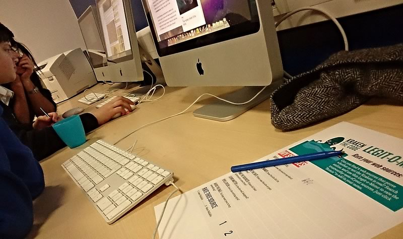

Hecho por MOUSE y remixado para los Clubs por Mozilla.
Los aprendices usarán Internet para resolver el misterio del Kraken, una legendaria criatura marina, mientras también aprenderemos sobre términos de búsqueda, palabras claves, y cómo evaluar la validez y relevancia de las funetes web.
Etiquetar tres pedazos de papel con “Real,” “Imaginario” y “Algo en el medio,” y cuelgenlas en diferentes partes del aula o espacio de trabajo..
10
min
Introducción
Tengan una breve charla con sus aprendices sobre los contenidos web.
¿Todo lo que ven o leen en la web es verdad?
¿Cómo saben cuándo la información en internet es confiable?
¿Cómo se dan cuenta de que la información no es confiable?
Luego revisen la planilla de tips Legit-o-Meter así revisan algunas reglas generales para determinar la credibilidad de un sitio web.
25
min
El Código Kraken: A la Caza
Organicen los aprendices en grupos de a 2 o 3 y expliquen que el desafío de cada grupo es probar si el legendario moustro, el kraken, es real o un mito.
Los grupos empezarán usando 20 minutos buscando en la web. Usando la guía de tips la planitilla, lo grupos deben evaluar 2 fuentes de internet, documentar lo que encuentran en Legit-o-Meter (ya sea escribiendo a mano o editando la plantilla online ).
Photo by Doug Belshaw
Consideren guiar sus búsquedas con los siguientes indicaciones:
Tengan charlas individuales con los participantes sobre los procesos en búsquedas de información creible.
Hagan una búsqueda de ejemplo juntos y pregunten al grupo como seguir bucando.
Junten a los alumnos y solicitenles que creen un screencast explicando sus decisicones en las búsquedas.
Una planilla de de búsqueda terminada Mouse learner
10
min
El código Kraken: Defensa
Al final del período de búsqueda, los grupos se tendrán que ubicar debajo de uno de los carteles: “Real,” “Imaginario,” or “Algo en el medio”.
Pregnten a cada grupo que es lo que encontraron sobre el Kraken y que defiendan sus opiniones usando la plantilla Legit-o-Meter que llenaron. Los participantes pueden cambiar de lugar si escuchan argumentos convincentes.
Terminen preguntando al grupo que elaboren una reflexion de lo que encontraron.